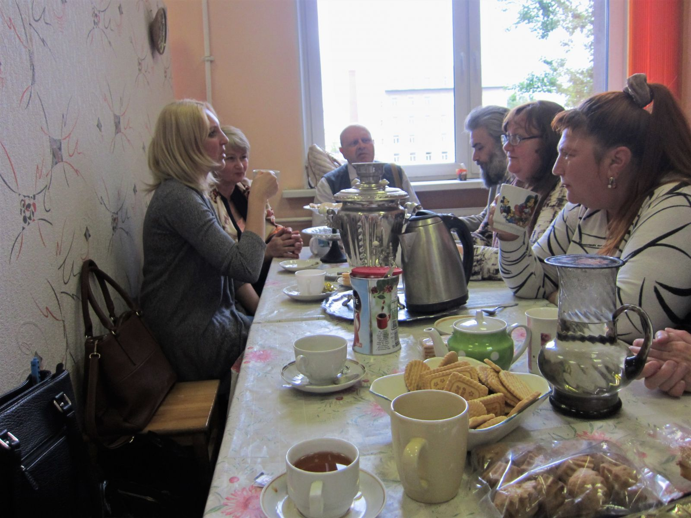
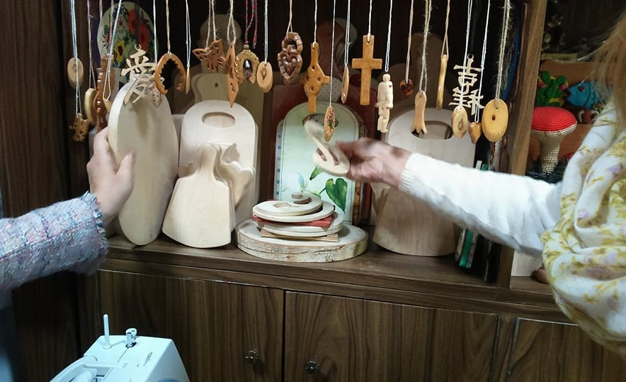

Pieredzes apmaiņa Sanktpēterburgā.
Biedrība “Gaismas stars” pieredzes apmaiņas ietvaros apmeklēja Sanktpēterburgas sabiedrisko invalīdu organizāciju “Sociālās rehabilitācijas klubs “Fēnikss” ”, kur tikās ar organizācijas vadītāju O.I.Rjabovu un kluba darbiniekiem un locekļiem, kuriem vizītes laikā tika novadīta sadarbības nodarbība, iepazīstinot ar metodēm, kuras tiek izmantotas nodarbībās biedrībā “Gaismas stars”. Vizītes laikā tika pārrunātas sociālās rehabilitācijas iespējas un metodes, kā arī problēmas darbā ar personām ar garīgās veselības traucējumiem, abu valstu veselības un sociālās aprūpes sistēmu atšķirības.
Tika apmeklēta arī Sanktpēterburgas P.P.Kaščenko psihiatriskā slimnīca Nr.1, kur notika tikšanās ar Viskrievijas sabiedriskās invalīdu organizācijas "Jaunās iespējas" pārstāvi K.M.Gebel un citiem slimnīcas vadošajiem darbiniekiem. Biedrības “ Gaismas stars” pārstāvjus vizītes laikā pavadīja “Sociālās rehabilitācijas kluba “Fēnikss”” pārstāvis O.N.Vadans un Invalīdu labdarības organizācijas “Ņevas kluba māja” vadītāja V.A.Vorobjova, kuras vadītā organizācija sniedz atbalstu psihiatrijas pacientu tuviniekiem.
Paldies Sanktpēterburgas kolēģiem par sirsnīgo uzņemšanu!
В рамках обмена опытом представители общества «Gaismas stars» посетили Санкт-Петербургскую общественную организацию инвалидов «Клуб социальной помощи «Феникс»», в котором встретились с руководительницей организации Ольгой Ильиничной Рябовой, персоналом и членами клуба, которым во время визита представители нашего общества провели игровое занятие, направленное на развитие коммуникации, взаимодействия и концентрации, таким образом ознакомили с методами, которые применяются на занятиях в обществе «Gaismas stars».
Посетили также Санкт-Петербургскую психиатрическую больницу №1 им. П.П.Кащенко, где встретились с председателем Общероссийской общественной организации инвалидов «Новые возможности» Кирой Манфредовной Гебель и другими ведущими специалистами больницы. Представителей общества «Gaismas stars» во время поездки в больницу сопровождали представитель «Клуба социальной реабилитации «Феникс»» Олег Николаевич Вадан и руководительница благотворительной организации «Невский клубный дом» Валентина Алексеевна Воробьёва, организация которой оказывает поддержку родственникам психиатрических пациентов.
Благодарим коллег из Санкт-Петербурга за сердечный приём!
http://www.club-fenix.narod.ru/
http://newchoicesspb.ru/
https://www.kaschenko-spb.ru/

- Sociālās rehabilitācijas kluba "Fēnikss" logo.
- Sociālās rehabilitācijas kluba "Fēnikss" vadītāja O.I.Rjabova.
Руководительница клуба социальной реабилитации "Феникс" Ольга Ильинична Рябова.
- "Gaismas stara" pārstāvji novadīja sadarbības nodarbību "Fēniksa" apmeklētājiem.
- Nodarbībā pavisam piedalījās ap 20 "Fēniksa" kluba biedri. Dalībnieki tika sadalīti mazākās grupās, kurām tika dots konkrēts uzdevums.
Viena no grupām uzdevuma izpildes procesā.
- Kamēr notiek nodarbība, mūsu vecākā sociālā darbiniece Dace ar "Fēniksa" un "Ņevas kluba mājas" pārtāvjiem diskutē par darba specifiku.
- Ņemot vērā datu aizsardzības likumu, fotogrāfijā nav redzami visi pasākuma dalībnieki  , tomēr liels paldies viņiem par aktīvo dalību un
, tomēr liels paldies viņiem par aktīvo dalību un
atsaucību. Attēlā esam kopā ar dažiem pasākuma dalībniekiem un klubu 'Fēnikss" un "Ņevas kluba mājas" vadītājām O.I.Rjabovu un
V.A.Vorobjovu. Paldies par sirsnīgo dāvanu- Zelta Fēnikss tagad ir atradis mājvietu "Gaismas starā".

- Pārsteidzoša sirsnība un viesmīlība!
- Sociālās rehabilitācijas klubs "Fēnikss" 2015.gadā uzvarēja brīvprātīgo programmu konkursā cilvēku ar psihiskām īpatnībām rehabilitācijas
jomā.
- Vizīte vienā no labākajām Sanktpēterburgas psihiatriskajām slimnīcām- P.P.Kaščenko vārdā nosauktā slimnīca Nr.1.
- Pateicoties galvenā ārsta uzņēmībai tiek atjaunotas bijušās Demidovu muižas ēkas, kuras kopš 1909.gada pieder psihiatriskajai slimnīcai.

- Tikšanās ar K.M.Gebel- psihiatri,slimnīcas sociālās rehabilitācijas nodaļas vadītāju personām, kurām zuduši sociālie kontakti. Jāpiebilst, ka
K.M.Gebel ir arī Viskrievijas sabiedriskās invalīdu organizācijas "Jaunās iespējas" priekšsēdētāja. Attēlā- darba terapijas telpa.
- Šādi produkti tiek radīti darba terapijas ietvaros.
.JPG)
- Tikšanās ar medicīniskās rehabilitācijas nodaļas vadītāju A.S.Jakunovu, kurš iepazīstināja ar slimnīcas darba specifiku, personālu un
pielietotajām terapijas metodēm.
- Mūzikas terapijas telpa.
.JPG)
(2).JPG)
- Mākslas terapijas telpa.
- Veidošanas terapija.
.JPG)
.JPG)
- Konferenču zāle - teātra nodarbību telpa. Slimnīcā piedāvā arī kino un deju un kustību terapiju u.c. nodarbības.
- Slimnīcas baznīca.